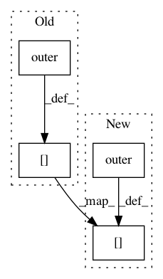

8cef69efb71c8f26931f6e448057942ea2533676,metric_learn/itml.py,ITML,fit,#ITML#Any#Any#Any#Any#,68
Before Change
_lambda[i] -= alpha
beta = alpha/(1 - alpha*wtw)
pos_bhat[i] = 1./((1 / pos_bhat[i]) + (alpha / gamma))
A += beta * A.dot(np.outer(v,v)).dot(A)
// update negatives
vv = self.X[c] - self.X[d]
for i,v in enumerate(vv):
wtw = v.dot(A).dot(v) // scalar
alpha = min(_lambda[i+num_pos],gamma_proj*(1./neg_bhat[i] - 1./wtw))
_lambda[i+num_pos] -= alpha
beta = -alpha/(1 + alpha*wtw)
neg_bhat[i] = 1./((1 / neg_bhat[i]) - (alpha / gamma))
A += beta * A.dot(np.outer(v,v)).dot(A)
After Change
beta = alpha/(1 - alpha*wtw)
pos_bhat[i] = 1./((1 / pos_bhat[i]) + (alpha / gamma))
Av = A.dot(v)
A += beta * np.outer(Av, Av)
// update negatives
vv = self.X[c] - self.X[d]
for i,v in enumerate(vv):
wtw = v.dot(A).dot(v) // scalar
alpha = min(_lambda[i+num_pos],gamma_proj*(1./neg_bhat[i] - 1./wtw))
_lambda[i+num_pos] -= alpha
beta = -alpha/(1 + alpha*wtw)
neg_bhat[i] = 1./((1 / neg_bhat[i]) - (alpha / gamma))
Av = A.dot(v)
In pattern: SUPERPATTERN
Frequency: 3
Non-data size: 4
Instances
Project Name: metric-learn/metric-learn
Commit Name: 8cef69efb71c8f26931f6e448057942ea2533676
Time: 2017-01-31
Author: arikpoz@users.noreply.github.com
File Name: metric_learn/itml.py
Class Name: ITML
Method Name: fit
Project Name: drckf/paysage
Commit Name: 57bc6b1065b9ec11ffb5c6891a3d8c770f46a21e
Time: 2017-04-12
Author: geminatea@gmail.com
File Name: paysage/models/tap_machine.py
Class Name: TAP_rbm
Method Name: gradient
Project Name: metric-learn/metric-learn
Commit Name: 9c68f7dd377c3e524807ad3b121f840f5623c028
Time: 2017-08-03
Author: bjoern.barz@uni-jena.de
File Name: metric_learn/itml.py
Class Name: ITML
Method Name: fit